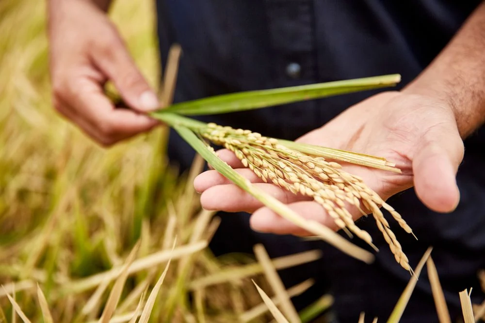

2026–27 season
Seed order form and terms
Growers who lodged an expression of interest (EOI) in 2025 used this form to order seed for the varieties and quantities they had nominated.
- Published order deadlinePassed
30Oct 2026
Access to PBR seed
SunRice provides Australian growers with access to Plant Breeder’s Rights (PBR) rice varieties. Check the published deadlines and seed ordering process for each season.

Seed ordering
The October 2026 deadlines listed by SunRice have passed. For questions about a submitted form, contact Grower Services.
2026–27 season
Growers who lodged an expression of interest (EOI) in 2025 used this form to order seed for the varieties and quantities they had nominated.
2027–28 season
EOIs for PBR rice varieties were due 12 months in advance. SunRice’s published process says it will notify growers by 30 November 2026 if it expects to meet their seed request.
2027–28 season
SunRice’s process starts with an EOI and ends with seed delivery in the next planting window.
Nominate each PBR variety and the quantity you require 12 months ahead. The deadline for this season was 12 October 2026.
Allow $150 per metric tonne for each variety. The deposit invoice is payable within seven days.
SunRice will advise by 30 November 2026 whether it expects to fulfil your request.
If confirmed, lodge a Seed Order Form in September or October 2027. SunRice plans to make it available in September 2027.
Pay the balance less your deposit in September or October 2027.
Receive your seed and plant your crop in September or October 2027.
Before you order
The seed order form covers seed supply. For rice grown after 30 June 2025, SunRice has no obligation to buy paddy as buyer of last resort. If SunRice decides to consider paddy offers from non-supplying growers, it will publish the applicable terms on the live seed information page.
SunRice uses the EOI deposit to help cover planting costs and applies it to the seed order. If it cannot fulfil a request, it will notify the grower as soon as reasonably practicable and refund the deposit in full.

Grower Services
Contact Grower Services for questions about seed access or a submitted form.
Call us
1800 654 557